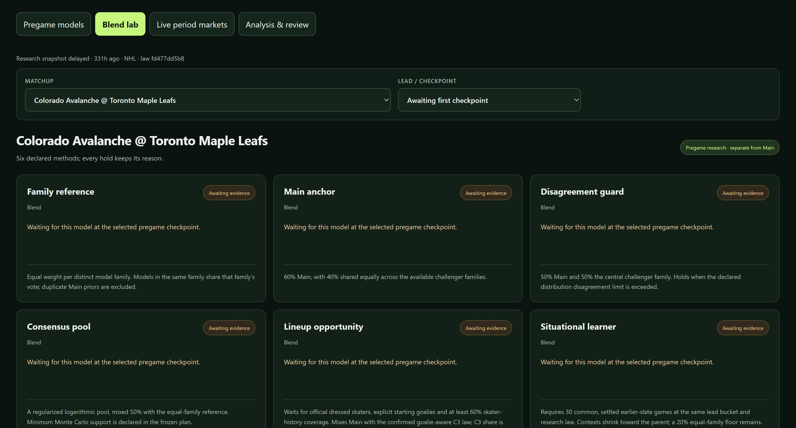

An independent project I designed, built and operate solo — NBA, NHL, NFL, MLB.
Jahvar Edwards · jahvaredwards@gmail.com · 609-240-2409 ·
New Jersey · LinkedIn
This page exists so the claims on my resume can be checked rather than taken on trust.
The platform runs unattended through every game window on a single Windows host. The screenshots are
real, taken on one night in November 2026 — three from the hockey instance, then basketball and football
running the same stack.
Each model and market scored prospectively: total MAE, margin MAE, bias, 95% coverage and a paired
delta against the Main model, over independently settled games only. Repeated models, minutes and lead buckets
do not inflate the game count. Finals wait six hours for revisions, the review checkpoint is 80 games, and there
is no automatic promotion — models sit in warm-up until they have earned a verdict.
2 · Six declared methods, each keeping its reason

Blending methods are declared in advance with their rules visible: an equal-weight family reference,
a 60/40 Main anchor, a disagreement guard that holds when the declared distribution limit is exceeded, a
regularised consensus pool, a lineup-opportunity method that waits for officially dressed skaters and confirmed
goalies, and a situational learner requiring 30 settled comparable games at the same lead bucket. Each one shows
why it is holding instead of quietly producing a number.
3 · The same system in live operation
A full card with model win probability and projected total per game, one game opened to its model
table — situational blend, Main, Poisson, process and a control arm, each carrying its own status rather than
collapsing into a single number. The chips along the top are the platform reporting its own stale feeds and a
late audit runner rather than hiding them.
4 · The same stack, other leagues
Hockey is the instance shown above. Basketball, football and baseball run the same architecture with
sport-specific models — the screenshots below were taken the same night.
Basketball — a live game, mid-projection
A game in the second quarter. Left: score, lead and the slate around it. Centre: the live total,
the model's projected final (110–106), whether the models agree (they do not — "No, split"), and a live rule
that has fired, labelled paper test with its running record and a read date at 100 picks, so
it cannot be quietly treated as proven. Right: how far off each forecast has been, by points-scored bucket and
by lead, with bias shown separately for Main and the blend. The chips at the top carry the operational state,
including which data source is carrying after one was paused, and how many paid odds credits remain against the
budget.
Football — a settled flag, scored honestly
The football instance after a result. The flag at the top is marked
PAPER, NOT PROVEN and shows its decimal price and the period it fired in; the original price is
retained so the record cannot be improved after the fact. Down the left is the week's card with each settled
flag and its outcome. On the right, forecast error split by clock and lead, and below it the process blends
still sitting under sealed test.
What the measurement actually showed
My confidence was optimistic. Stated confidence around 76% corresponded to roughly 49%
realised, where the book sat near 55%, across 178 graded legs.
Correlated legs are worth less than they look. Teammates moving in the same direction won
together about 4% less often than an independence assumption predicts — which is why the rules now allow one
selection per player-game.
The real opportunity is timing, not cleverness. The clearest measurable edge is
line-versus-score lag: the window where a posted number has not yet absorbed what just happened.
Ideas get killed. A hypothesis about missing stat categories was tested, retested on a
larger sample, and abandoned when it explained nothing.
Operating it
Scheduled collectors per sport and cadence; paid odds pulls run against a per-day credit budget with a usage
ledger, with free ladders filling the gaps between captures.
Guards fail closed: malformed vendor data halts a component rather than publishing a number I would act on.
Changes ship as staged installs with tested rollback, verified by replay against prior data and nightly
golden-case checks — never by whether the process is running.
One outage was traced through logs, process state and database evidence to resource contention, a degraded
query and malformed input; an index took a key lookup from about two seconds to under one millisecond.
Stated plainly: the platform was built with heavy AI assistance, and the models do not
reliably beat closing markets. I know that because every output is graded against the market and the record is
kept whether or not it flatters the model. What I would bring to a desk is the operational practice and the
honest measurement, not a claim of edge.